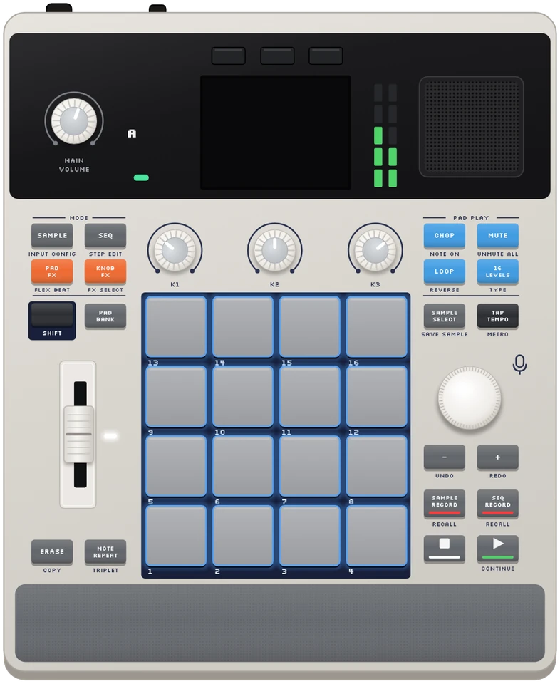
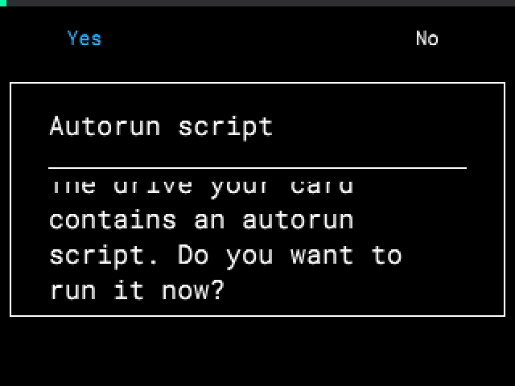
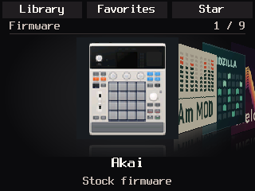

One card, many firmwares
Akai MPC Sample · firmware 1.4.0.8
Get MP-Selector-1.2.2.zip. It is free.
github.com/fomoPhil/mpselectorphilwoolley.com/mpselectorUnzip the download. Open SD Card Files. Copy the three things inside onto your card.

ShiftPad 8Save your beat. Hold Shift and press Pad 8. Find Dev Enhancements (Beta). Turn on Developer Mode.

Put the card in your MPC. It asks to run the script. Press the left button, Yes.

| Left button | Library, a list. Press again for Covers. |
| Middle button | Favorites. Press again for All mods. |
| Right button | Star the cover. Press again to Unstar. |
| Tap Power | Shut down. Right button is Yes. Left button is No. |
| Back to Akai | Choose Akai and press the dial. If it asks to run the script again, press the right button, No. |